Garmin Technology
Design Goal: Create a landing page let users understand the watch technology of Garmin
Character
My role in this project was designing, coding, updating, and maintaining the website. I coordinated with the marketing specialists, product manager, which contents are suitable for the landing page.
Design
I used black and blue to design the technology land page.The landing page sings a responsive design that supports different form factors and devices. I designed the layout and structure and built an SCSS framework that displays the web page.
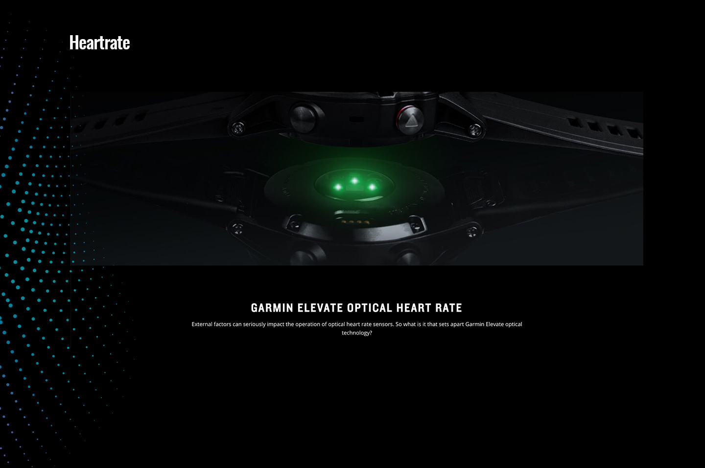
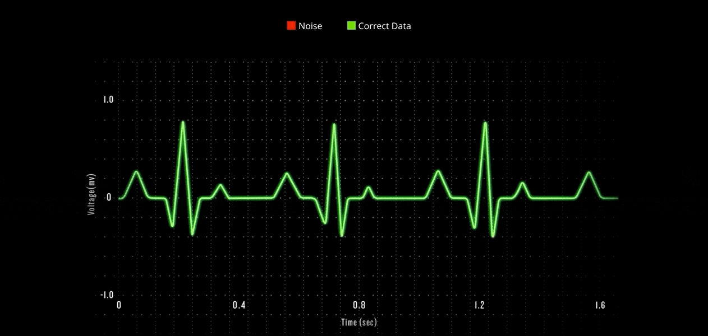
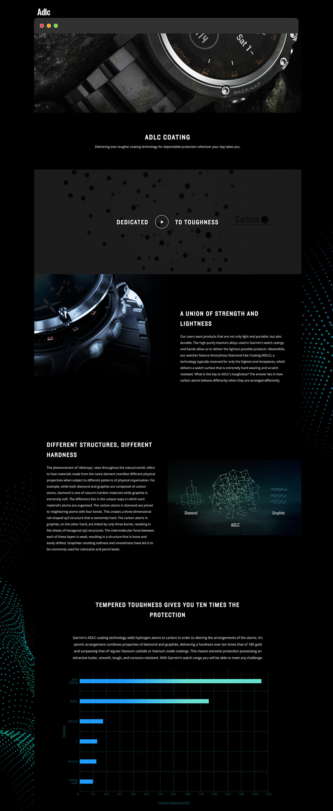
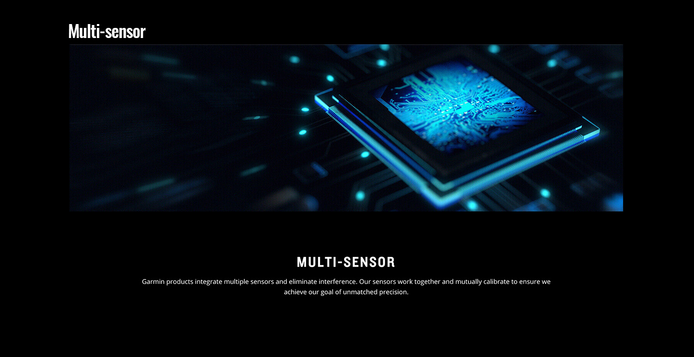
Results
I created the page with some animation to attract users and worked closely with video designers to make the page more attractive. I observed the Google Analytics that users are more interested in the pulse ox.
 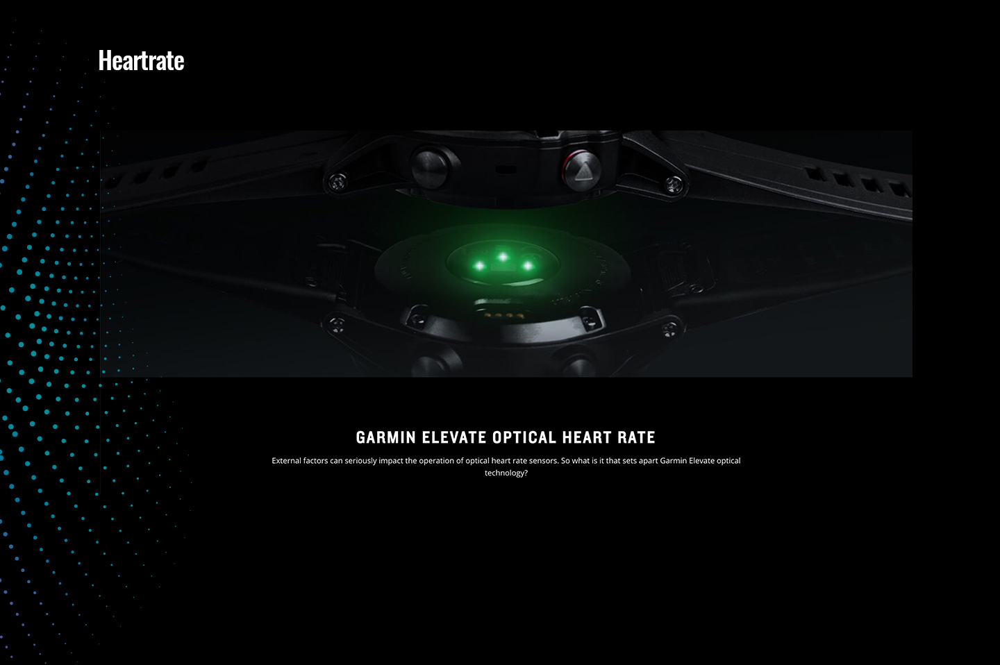
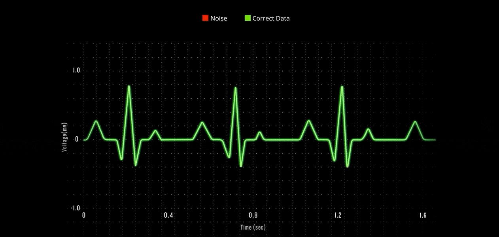
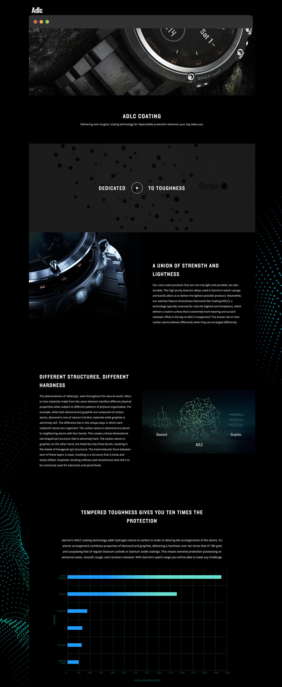
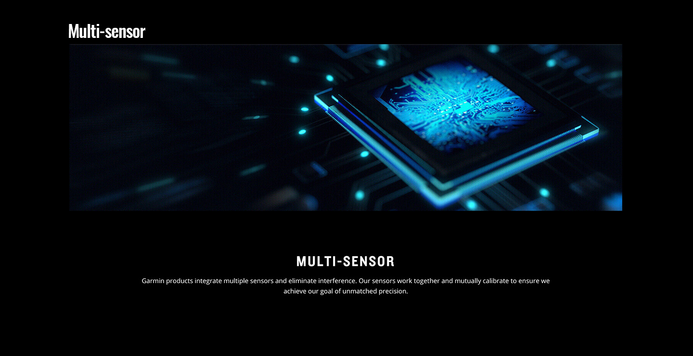
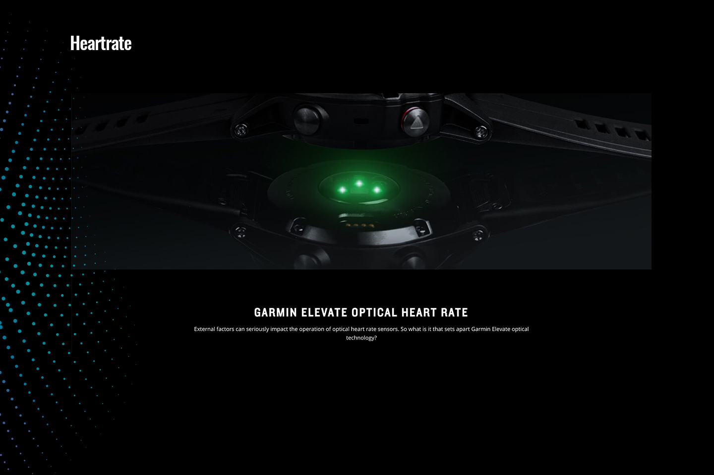
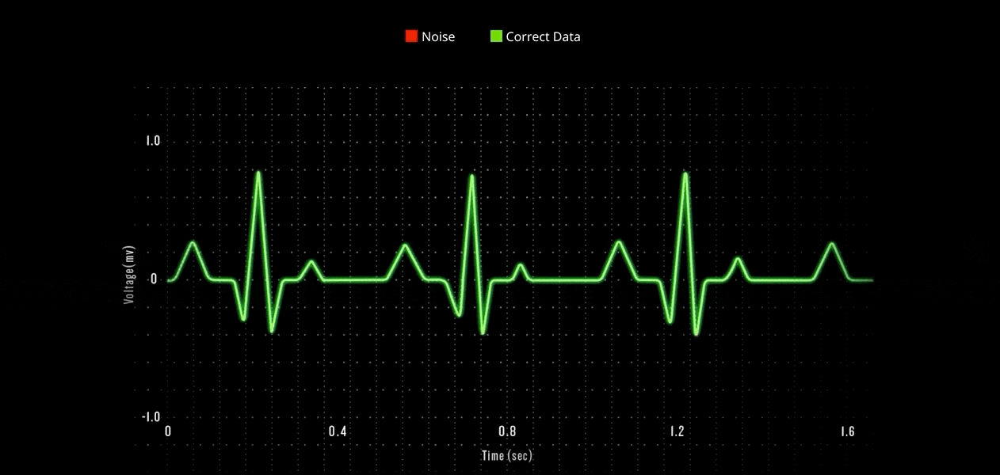
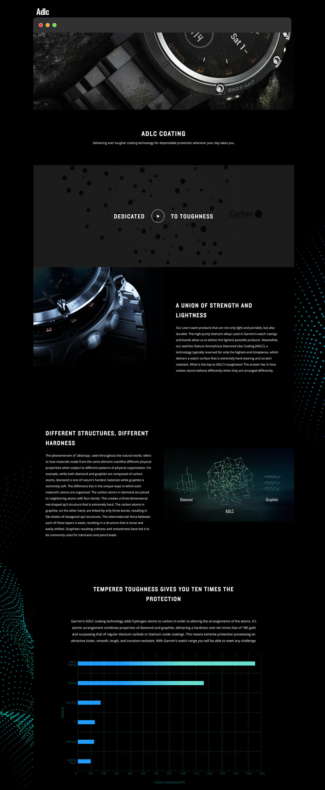
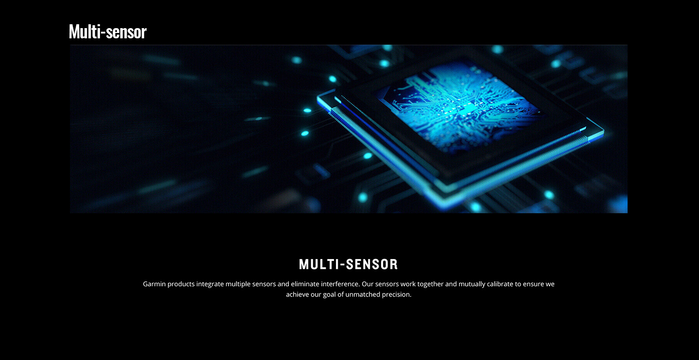